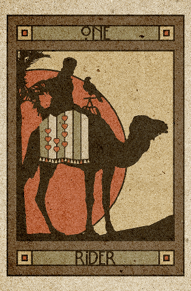

现代雷诺曼 · Marcia McCord 作品
Chelsea 雷诺曼
现代
复古风
爱德华时代
褐调
明信片风格
一副复古风的 36 张雷诺曼，取材自 20 世纪初的印刷文化——明信片、广告石印画、客厅游戏插图。气质安静，却很有个性。

Marcia McCord（玛西娅·麦考德）创作的 Chelsea Lenormand 是一副复古风的 36 张牌组，取材自 20 世纪初的印刷文化——明信片、广告石印画、客厅游戏插图——为传统符号染上一层柔和的怀旧调子。牌组的名字来自伦敦的 Chelsea 区，McCord 正是在那里构思出这套视觉方案的。
在现代雷诺曼里，它属于安静而有个性的那一类：没有 Gilded Reverie 那么华丽，也不像 Blue Owl 那么素净，而是有一种褐调的独特身份。
配色柔和、略带褪色感；服饰忠于年代；场景以晕影收边，看上去真像印在 1910 年某张明信片背面。整副牌像一封写给爱德华时代视觉文化的小小情书，落在 36 个雷诺曼符号上。每张牌都保留了传统编号与扑克牌嵌图，连字体也做成了那个年代的样子。
喜欢复古、古董或 20 世纪初审美的人。Chelsea 与其他带年代气息的牌组放在一起毫不违和，比如 Under the Roses（维多利亚／前拉斐尔派风格）和 Postmark Lenormand（邮政复古风），却又和它们各不相同。
标准的 36 张，沿用传统编号与扑克牌对应。解读规则完全是古典小雷诺曼那一套，带年代口音的只有画面。
由 Marcia McCord 自费出版，印量有限。供货并不稳定——想找现货，可以留意独立塔罗零售商和二手交易网站。